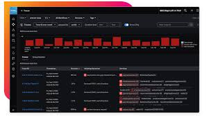

For pre-checks and post-checks of Tomcat 10 services on VM servers, login access is restricted to the MW team, making us heavily dependent on them at the start and end of the activity.
Implemented 100% automated monitoring for tracking all the Tomcat 10 services, ensuring they operate smoothly across the PROD and COB environments. Tomcat 10 instance log paths (capturing incoming traffic) have been directly onboarded into the index, and the index is configured with the Splunk URL.
Splunk dashboard monitoring is limited services running on Tomcat/VM servers and for ECS migrated services we already have dedicated ECS Openshift portal for tracking and restarts
This dashboard enables monitoring of traffic patterns, including timestamps, source countries, targeted APIs, and whether the requests were successfully processed or blocked
Demo screenshot provided as a substitute for the original due to privacy constraints.
